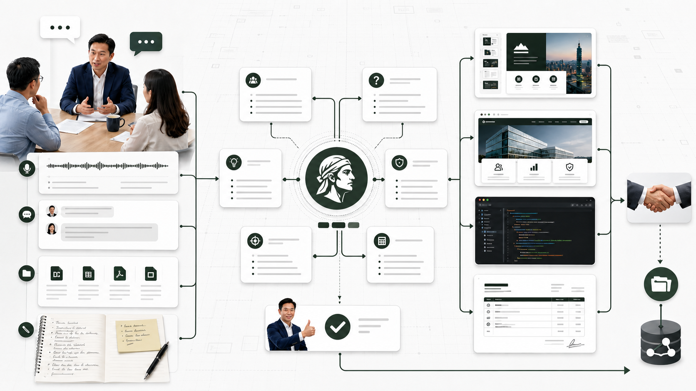

簡報檔提案、內訓或交接簡報
談需求、提案、報價，都可以先交給案神整理
把模糊需求，整理成能報價、能執行的方案。
只要雙方需要對齊認知，後面可能收費，就把對話、筆記與文件放進來。案神會整理重點，也會把還沒問清楚的地方留下來給人確認。
整理完，最後可以拿到這四種成果
不是只給你一張漂亮流程圖。確認過的需求會繼續變成真正能拿去提案、報價或開工的文件。
網頁說明頁、提案頁或 Demo
程式代碼確認範圍後再進入開發
服務報價說明書方案、範圍與付款條件
什麼時候適合用案神？
判斷方式很簡單：這段討論如果沒弄清楚，後面就可能做錯、報錯或收不到錢，就該先整理。
客戶只說「我想做網站」
把目的、使用者、功能、預算與時間拆開問，不直接猜客戶要哪一種網站。
一場會議同時冒出很多需求
把已確認、待確認與推測分開，避免大家會後記得的是不同版本。
準備提出付費服務
先整理做什麼、不做什麼、要交什麼，再產出提案或報價，避免邊做邊吵範圍。
用一張無限畫布，看懂整個案子
這裡是視覺示意圖，不需要真的拖拉。重點是把散在對話、文件與腦中的資訊放到同一張圖，再一路連到可以交付的成果。

把資料放進來會議、錄音、訊息、文件、筆記
案神先整理需求、問題、假設、風險與範圍
人負責確認重要決定不能交給 AI 自己猜
接著做成果簡報、網頁、代碼、報價說明書
兩個真的做過的案例
客戶名稱與敏感數字已拿掉，只保留原本遇到的問題、怎麼整理，以及實際做出的文件。
案例一｜一家 5 人公關活動公司
五個需求混在一場對話裡，先整理成兩個能選的服務方案
對方想改善提案、結案報告、社群內容、團隊知識庫與資料分析。每一項都能做，但如果全部一起報價，範圍一定會失控。
案神怎麼整理
先把逐字稿拆成已確認、待確認與推測，再把關鍵問題收斂，最後確認成一天企業內訓與三個月陪跑兩個方向。
實際產出
提案簡報架構、講師簡報交接包、一天內訓課綱，以及兩個方案的範圍說明。
這裡只描述已完成的規劃與文件，不代表客戶已購買或專案已執行。
案例二｜一個有四套分散工具的 SaaS 專案
四套工具分散在三個平台，先說清楚要租、要買，還是只需要整合
原本的工具沒有共用會員、登入與收款。真正要處理的不是多加一顆按鈕，而是系統歸屬、代碼權利與後續由誰維護。
案神怎麼整理
盤點現有功能與缺口，拆出租用與買斷兩條路，另外說清楚主機、代碼授權、登入與整合服務的責任邊界。
實際產出
兩種方案比較、正式 HTML 報價說明書、功能清單、時程，以及技術整合的包含與排除範圍。
這份工作交付的是對焦與報價文件，不包含四套工具的實際程式開發與部署。
一般會怎麼進行？
案例是做過的事，這裡才是每個新案子都能照著走的流程。
對話、會議、筆記與舊文件先保留，不急著改寫。
INPUT把已確認、待確認與推測分開，找出真正缺的答案。
AWESOME-ANSON範圍、價格與責任邊界由人拍板，AI 不代替承諾。
HUMAN REVIEW依目的做成簡報、網頁、代碼或報價說明書。
DELIVERABLES可進 GitHub 自己用，也能接後續付費服務與開發。
HANDOFF案神不是最後一站，它負責把事情交代清楚
同一份已確認的內容可以繼續交給其他工具，不用每到下一站又重新解釋一次。
客戶的原始需求
談話、提案想法、參考資料與限制條件。
SOURCE INPUTS案神整理與人工確認
留下證據、問題、範圍與決策，形成同一份認知。
AWESOME-ANSON + HUMAN REVIEW成果與後續執行
交給簡報、網頁、程式、報價或其他神系列繼續處理。
PPT / WEB / CODE / QUOTE / AGENTS手上有一個談不清楚、又準備收費的案子？
先把資料交給案神整理。我們會先確認現在卡在哪裡，再決定適合自己從 GitHub 開始，或由我們接著協助。
正式版會接 StartKiter 聯絡入口；這份本機稿先確認視覺方向。